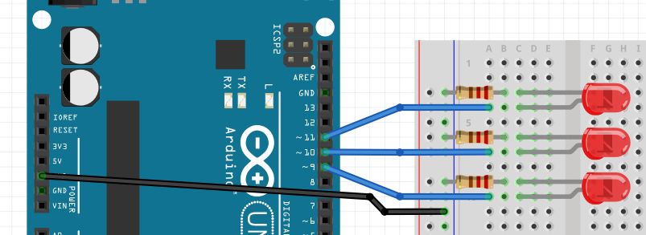

GPIO (General-Purpose Input Output)
|
| Tryb nocny |
|
Obsługa wielu wyjść cyfrowych
Po ukończeniu wprowadzenia, wiesz już jak zamrugać diodą. Każda dioda, ma katodę (-) oraz anodę (+).
Anoda, posiada krótszą nóżkę i to do niej należy podłączyć zasilanie. Można skojarzyć to prez znaną
nazwę AK47 (prąd płynie A -> K, a 4 jest mniejsze niż 7 :)). Dodatkowo, aby ograniczyć prąd płynący przez
diodę, należy szeregowo włączyć do niej rezystor. Podobnie jak na poniższym obrazku, podłącz trzy diody
do pinów
D5, D6, D7.

Wiedząc, że
digitalWrite(PIN_NUMBER, LOGIC_LEVEL);
oraz
pinMode(PIN_NUMBER, LOGIC_LEVEL);
spróbuj zamrugać trzema diodami po kolei.